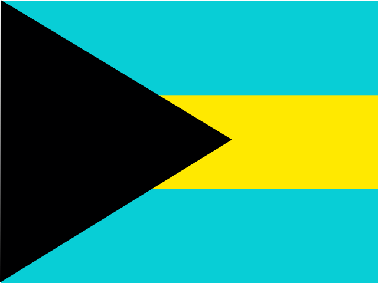

Countries › North America
Dominican Republic
Where the Dominican Republic stands out
Dominican Republic380 Guyana346
Guyana346
Bahamas3101st of 171 · Food and Agriculture Organization (FAO) Food Balance Sheets, 2023
 Russia16.83Dominican Republic16.75
Russia16.83Dominican Republic16.75 Belarus16.70
Belarus16.7013th of 171 · FAO Food Balance Sheets, 2023
 Costa Rica42.5%Dominican Republic40.6%
Costa Rica42.5%Dominican Republic40.6% Suriname40.2%
Suriname40.2%21st of 175 · United Nations Department of Economic and Social Affairs (UN DESA) World Urbanization Prospects 2025 and World Bank (derived), 2025
 Turkey33.3%Dominican Republic30.0%
Turkey33.3%Dominican Republic30.0%24th of 185 · United States Energy Information Administration, 2024
Size, sea and borders
Land and height
People
Food, power and travel
Football and chess
See all 135 facts about the Dominican Republic
Showing 20 highlights for the Dominican Republic. Rank counts from the highest value among the countries that have data: 1st is the most. Ties share a rank. Data version 91, 22 November 2026.
Sort the Dominican Republic against four others
The game has figures for the Dominican Republic on 180 of its 190 questions.
The same game for Android and iOS. It launches on 10 December 2026.
Out now.